Команды управления Роботом из программы
Кумир-программа, управляющая Роботом, должна начинаться со строки использовать Робот (подробнее – см. описание языка Кумир). При выполнении этой строки Кумир помещает Робота в стартовую обстановку.
Система команд исполнителя «Робот» включает:
-5 команд, вызывающих действия Робота (влево, вправо, вверх, вниз, закрасить);
-10 команд проверки условий:
1)8 команд вида [слева/ справа/ сверху/ снизу] [стена/ свободно],
2)2 команды вида клетка [закрашена/ чистая];
-2 команды измерения (температура, радиация).
Командам влево, вправо, вверх, вниз, закрасить соответствуют алгоритмы-процедуры языка КуМир. Остальным командам соответствуют алгоритмы-функции, тип этих функций указан ниже.
1) Влево.
Синтаксис:
алг влево
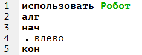
Перемещает Робота на одну клетку влево. Если слева стена, выдает отказ.
2) Вправо.
Синтаксис:
алгвправо
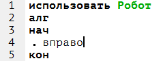
Перемещает Робота на одну клетку вправо. Если справа стена, выдает отказ.
3) Вверх.
Синтаксис:
алг вверх
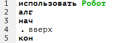
Перемещает Робота на одну клетку вверх. Если сверху стена, выдает отказ.
4) Вниз.
Синтаксис:
алг вниз
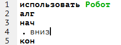
Перемещает Робота на одну клетку вниз. Если снизу стена, выдает отказ.
5) Закрасить.
Синтаксис:
алг закрасить
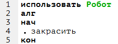
Делает клетку, в которой находится робот, закрашенной.
Ниже приведён пример использования команд-действий Роботa.
1)Слева свободно
Синтаксис:
алг лог слева свободно
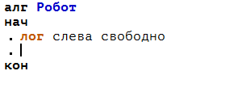
Возвращает да, если Pобот может перейти влево, иначе – нет.
2)Справа свободно
Синтаксис:
алг лог справа свободно
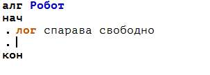
Возвращает да, если Pобот может перейти вправо, иначе – нет.
3)Сверху свободно
Синтаксис:
алг лог сверху свободно
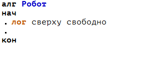
Возвращает да, если Pобот может перейти вверх, иначе – нет.
4)Снизу свободно
Синтаксис:
алг лог снизу свободно
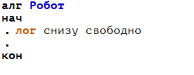
Возвращает да, если Pобот может перейти вниз, иначе – нет.
5)Слева стена
Синтаксис:
алг лог слева стена
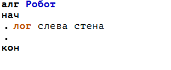
Возвращает да, если слева от Pобота находится стена, иначе – нет.
6)Справа стена
Синтаксис:
алг лог справа стена
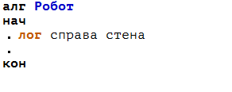
Возвращает да, если справа от Pобота находится стена, иначе – нет.
7) Сверху стена
Синтаксис:
алг лог сверху стена
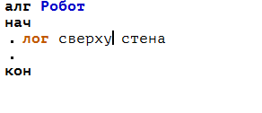
Возвращает да, если сверху от Pобота находится стена, иначе – нет.
8)Снизу стена
Синтаксис:
алг лог снизу стена
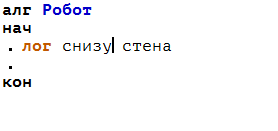
Возвращает да, если снизу от Pобота находится стена, иначе – нет.
9)Клетка закрашена
Синтаксис:
алг лог клетка закрашена
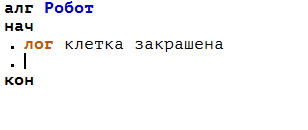
Возвращает да, если клетка закрашена, иначе – нет.
10)Клетка чистая
Синтаксис:
алг лог клетка чистая
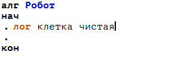
Возвращает нет, если клетка закрашена, иначе – да.
1)Радиация
Синтаксис:
алг вещ радиация
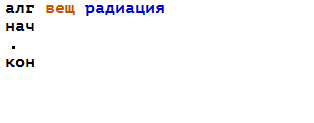
Возвращает значение радиации в клетке, где находится Pобот.
2)Температура
Синтаксис:
алг вещ температура
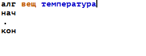
Возвращает значение температуры в клетке, где находится Pобот.